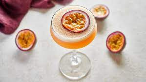

Passion Fruit Martini

Description
Can't go wrong with a glass of cocktails for your friends. Lets start with Passion Fruit Martini's
Ingredients
- Two ripe passion fruits (they should have a crinkly appearance), halved
- 60ml vanilla vodka
- 30ml passoa
- 1 tbsp lime juice
- 1 tbsp sugar syrup
- Prosecco, to serve
Steps
- Scoop the seeds from one of the passion fruits into the glass of a cocktail shaker
- Add the following; Vodka, Passoa, lime juice and sugar syrup
- Add a handful of ice and shake well
- Strain into 2 martini glasses,
- Top up with prosecco
- Add half a passion fruit to each
- Serve and enjoy!
Return to Home Page